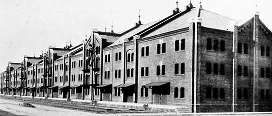

<!DOCTYPE html>
<html lang="jp">
<head>
    <link rel="stylesheet" href="./css/style.css">
    <body style="background-color:lightyellow"></body>
    <html style="background-color:lightyellow"></html> 
    
    <!-- ⑥↓タイトルを変えてみよう -->
    <title>第９回</title>
    <!-- ⑤スタイルシートの設定をしよう -->
    <link rel="stylesheet" href="./css/style.css">
    <!-- h1.htmlからある行をコピペしてくればOK -->

</head>
<body>
    
    <h1>第9回</h1>
    <!-- 塊ごとにdivタグで区切るようにしましょう。 -->
    <center><font size="6"><b><font color="tan">インタビュー</font></b></font></center><br><br>
        <br>

    
         <!-- ①↓に文字を書いてみよう -->
    <center><b>質問内容</b><br>
        1.横浜のデートスポットはどこでしたか。<br>
        2.昔からある飲食店でおすすめの場所はどこですか。<br>
        3.ナポリタンを最初に食べたのはいつですか。<br>
        4.元町は昔から高級でしたか。<br>
        5.若いころ友達とどのような場所でどのような遊びをしていましたか。<br>
        6.発展していくみなとみらいについてどう思いますか。(昔のままがいいなど)<br>
        7.子供のころ遠足はどこに行きましたか。<br>
        8.野毛山動物園ができた当初と今の印象はどう違いますか。<br>
        9.今も昔らしさが残っていると感じる場所はどこですか。<br>
        10.これだけはほしいもの、ほしかったものはありますか。

    
    
    </center><br>
    


<center><br>
        <br>
        <br>
        <br>
        <br>
        <br>
        <br>
        <br>
        <br>
        


</center><br>


</body>
</html>